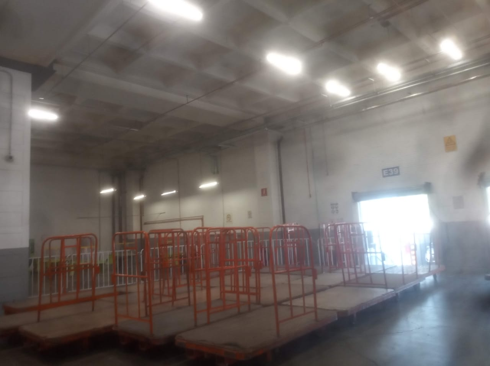
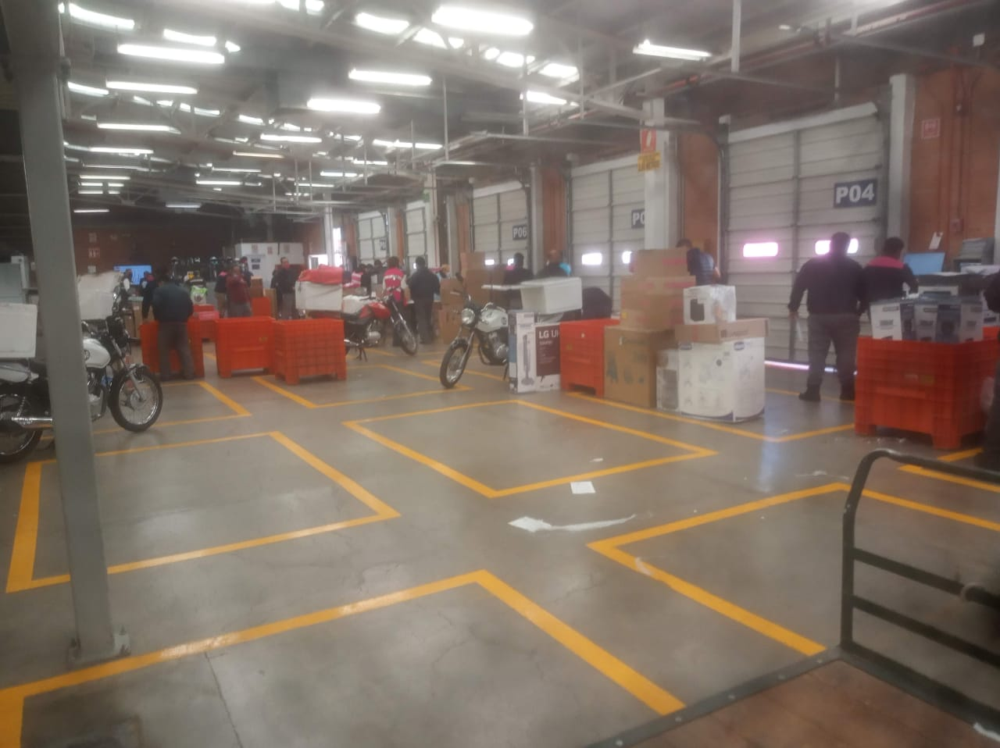
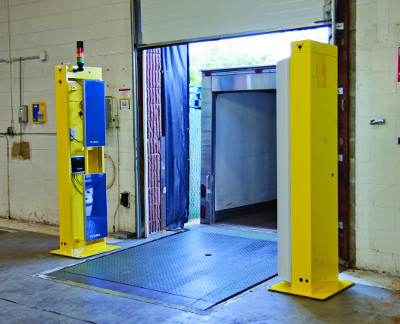
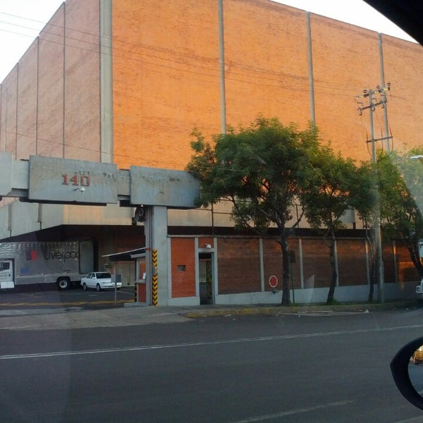
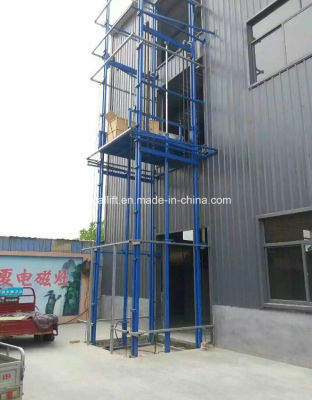

La forma de manipular la mercancía es con la ayuda de patines, en estos un colaborador carga y coloca la mercancía y lo empuja por la garganta. Las llantas del patín traseras son fijas y las delanteras "locas" lo que permite mover al patín en cualquier dirección.
Utilizar la fuerza de trabajo física limita la operación a las capacidades físicas del personal en planta supone riesgos por carga de mercancía pesada al colaborador, así como incrementa el riesgo de dañar la mercancía por manipularla. Las llantas locas impiden tener un punto de apoyo fijo para colocar la mercancía.
Invertir en cintas transportadoras que cubran la ruta de la garganta
Construir un sistema de rieles que cubra la ruta de la garganta donde se desplacen los patines
Implementar un sistema de bloqueo para fijar las llantas "locas" y poder proporcionar un punto de apoyo fijo.
Disminución del esfuerzo físico requerido, sistematización de una ruta que agilice el transporte de la mercancía, al implementar el bloqueo en los patines se facilita la carga de mercancía y la acción es más segura.
Al implementar las cintas transportadoras o un sistema de rieles la fuerza laboral necesaria para desempeñar la actividad será menor. Acto que podría ocasionar desvinculaciones laborales teniendo en cuenta que el objetivo de una empresa es generar riqueza cuestionarse sobre el impacto social que ocasionaría la perdida de "x" número de puestos de trabajo.
Las cintas transportadoras son movidas por electricidad considerar el peor de los escenarios para prevenir situaciones que comprometan la operación
Para tener un control en la mercancía especialmente en paquetería se realiza un proceso de escaneado en el cual con pistolas se escanea paquete por paquete. Esta revisión tiene múltiples procesos control, acomodo de rutas entre otros.
Este proceso requiere de una gran cantidad de colaboradores y tiempo para completar la tarea
Invertir arcos con sensores de radiofrecuencia para llevar el control de paquetes
Implementar un sistema de rieles que transporten los paquetes y utilizar la fuerza laboral solo para colocar en la orientación correcta el código de barras a algún lector.

Disminución de tiempo para realizar el control de la mercancía
Mejorar la ergonomía del colaborador evitando inclinarse para obtener los paquetes del fondo de los contenedores naranjas
Revisar la eficacia de los arcos así como tener un proceso de control de calidad que asegure la confiabilidad de esta propuesta
La mercancía que está en el piso 3 correspondiente a paquetería es bajada a la planta 1 cargada en una unidad m2 el camión m2 sale y entra a paquetería donde es descargada y escaneada
Se considera que puede haber una alternativa a este traslado
Construir un elevador por la parte exterior del piso 3 donde se pueda bajar la mercancía directamente al anexo
Construir una puerta que conecte la planta 1 con el anexo en el cual se pueda trasladar la mercancía
Trasladar el comedor al anexo y mudar la operación de paquetería al área del comedor.

Se evitaría cargar y descargar de la unidad M2 agilizando el proceso.
Hacer un análisis del layout de planta y explorar alternativas a esta situación
Elegir la opción que represente el menor coste.